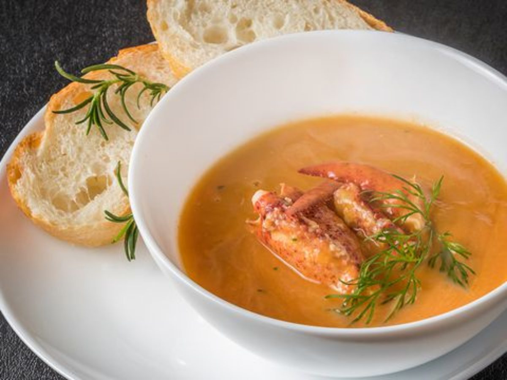
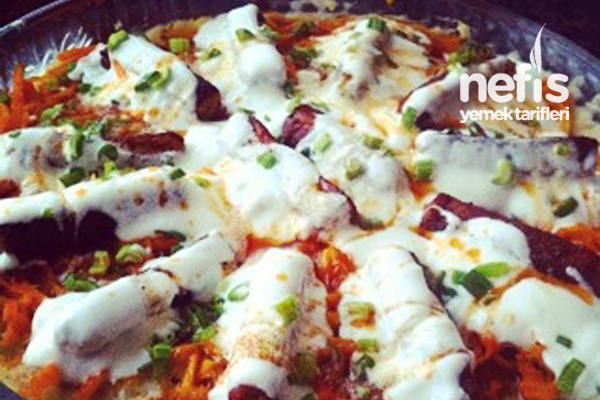
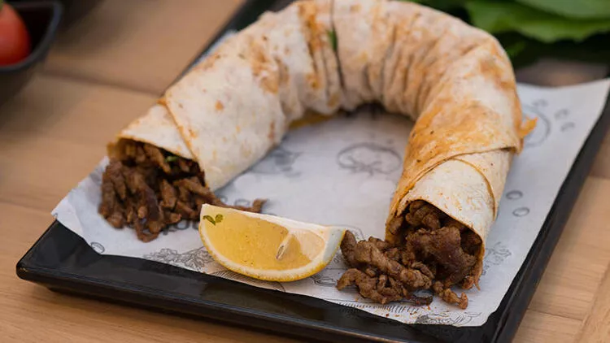
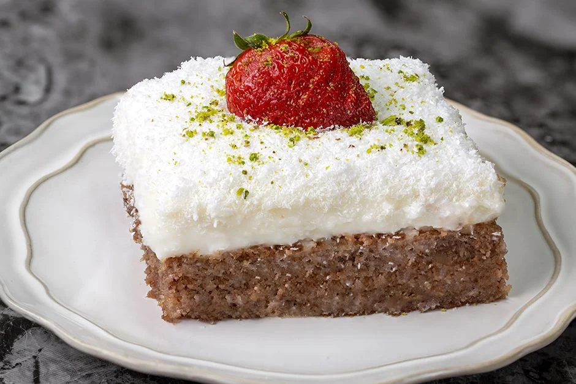

Kitap Sarayım
****Ürünlerimiz****

Malzemeler
- 1 kilo yengeç
- 3 kereviz sapı
- 4 yemek kaşığı limon suyu
- 1 çay kaşığı tuz
- 1 çay kaşığı kimyon
- 1 soğan doğranmış
- 2 diş sarımsak, kıyılmış
- 1 su bardağı su

Malzemeler
- Hamuru için:
3 su bardağı un
1 su bardağı ılık su
1 adet yumurta
1 çay kaşığı tuz
- Harcı için:
250 gram kıyma
1 adet orta boy kuru soğan
1 çay kaşığı tuz
1/2 çay kaşığı karabiber
1/2 çay kaşığı pul biber
- Sosu için:
2 yemek kaşığı tereyağı
2 yemek kaşığı salça
- Üzeri için:
1 kase sarımsaklı yoğurt
1 çay kaşığı nane
1/2 çay kaşığı sumak
1 çay kaşığı pul biber

Malzemeler
- Patates yatağı için;
5 adet patates
2 kuru soğan
3 yeşil biber
1 küçük dal taze soğan
1 yemek kaşığının yarısı kadar salça
Bir kaşık tereyağı
Yarım su bardağı süt
2 kup şeker
Reyhan
Karabiber
Kırmızı biber
Tuz
Yarım çay kaşığı tarçın
- Havuç sote için;
6 adet havuç
Yarım çay bardağı sıvı yağ
1 küp şeker
Tuz
- köfte hazır olarak alınabilir
- Bir büyük kase yoğurt
3 diş sarımsak
2 çay kaşığı şeker
3 çay kaşığı tuz

Malzemeler
- 600 gram dana eti
1 adet kuru soğan
- Yarım demet maydanoz
2 orta boy domates
- Tuz
Kırmızı toz biber
Sumak
- 1 çay bardağı sıvı yağ
1 su bardağı sıcak su
- Lavaş

Malzemeler
- 3 adet yumurta
Yarım su bardağı şeker
Yarım su bardağı sıvı yağ
1 su bardağı galeta unu
1 su bardağı kırılmış ceviz
1 su bardağı Hindistan cevizi
1 paket kabartma tozu
- Kreması İçin;
1 litre süt
1 su bardağı nişasta
Yarım su bardağı şeker
1 paket vanilyaS
1 paket krem şanti
Şerbeti İçin;
- 2 su bardağı su
1,5 su bardağı şeker
1 paket vanilya